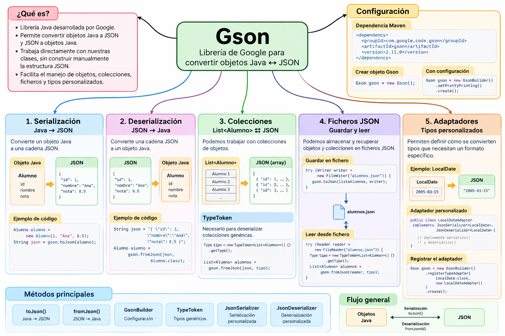

Gson¶
Guía del proyecto Maven actualizado (Java 21)¶
Correspondencia con el ZIP descargable
Esta sección describe la versión revisada del proyecto. Algunos fragmentos de las explicaciones anteriores son ejemplos simplificados para aprender una operación; pueden omitir imports, paquetes o capas. Para ejecutar el programa completo utiliza los ficheros del ZIP, con los paquetes y la configuración que se indican aquí.
Descargar proyecto Maven actualizado
Organización por responsabilidades¶
model/: modelo de datos.adapter/: adaptadores de tipos.config/: configuración centralizada.repository/: acceso a datos JSON.app/: programas ejecutables.
Orden recomendado de lectura y ejecución¶
| Paso | Clase | Objetivo | Ejecución |
|---|---|---|---|
| 1 | com.example.model.Alumno |
Modelo de datos | No, clase de apoyo |
| 2 | com.example.adapter.LocalDateAdapter |
Conversión de LocalDate | No, clase de apoyo |
| 3 | com.example.config.GsonConfig |
Configuración común de Gson | No, clase de apoyo |
| 4 | com.example.app.DemoGson |
Objeto Java ↔ JSON | Sí, ejecutar main |
| 5 | com.example.app.DemoListaGson |
Listas y TypeToken | Sí, ejecutar main |
| 6 | com.example.repository.AlumnoJsonRepository |
Lectura y escritura de ficheros | No, clase de apoyo |
| 7 | com.example.app.GuardarAlumnosGson |
Guardar lista en JSON | Sí, ejecutar main |
| 8 | com.example.app.LeerAlumnosGson |
Leer lista desde JSON | Sí, ejecutar main |
| 9 | com.example.app.DemoLocalDateGson |
Fechas con el adaptador | Sí, ejecutar main |
Java 21 y fechas: todas las demostraciones usan GsonConfig.crearGson(), que registra LocalDateAdapter. No sustituyas esa configuración por new Gson() cuando trabajes con LocalDate.
Para trabajar en VS Code, abre la carpeta que contiene pom.xml, comprueba que el JDK es Java 21 y ejecuta los main en el orden propuesto. Los ficheros data/ utilizan rutas relativas al directorio de trabajo.
Introducción¶
Gson es una librería Java desarrollada por Google que permite convertir objetos Java a formato JSON y realizar el proceso contrario.
Su principal característica es que permite trabajar directamente con nuestros objetos Java, sin necesidad de construir manualmente cada propiedad del documento JSON.
Podemos resumir su funcionamiento así:
Objeto Java
│
│ serialización
▼
JSON
│
│ deserialización
▼
Objeto Java
Por ejemplo, partiendo de un objeto:
Alumno alumno =
new Alumno(
1,
"Ana",
8.5
);
Gson puede generar automáticamente:
{
"id": 1,
"nombre": "Ana",
"nota": 8.5
}
Y también puede realizar el proceso contrario:
JSON
↓
Gson
↓
Alumno
Mapa conceptual de Gson¶

¿Qué aprenderemos?¶
A lo largo de este minicurso aprenderemos a utilizar Gson progresivamente:
Gson
│
├── Configuración del proyecto
│
├── Serialización
│ Java → JSON
│
├── Deserialización
│ JSON → Java
│
├── Colecciones
│ List<Alumno> ⇄ JSON
│
├── TypeToken
│
├── Ficheros
│ Guardar y leer JSON
│
└── Adaptadores
LocalDate ⇄ JSON
¿Por qué estudiamos Gson después de org.json?¶
Con org.json hemos aprendido a trabajar directamente con la estructura de un documento JSON.
Por ejemplo:
JSONObject alumno =
new JSONObject();
alumno.put(
"id",
1
);
alumno.put(
"nombre",
"Ana"
);
alumno.put(
"nota",
8.5
);
Nosotros mismos construimos cada propiedad.
Con Gson podemos trabajar de otra forma:
Alumno alumno =
new Alumno(
1,
"Ana",
8.5
);
String json =
gson.toJson(alumno);
Por tanto:
org.json
│
▼
manipulación explícita
de la estructura JSON
frente a:
Gson
│
▼
conversión entre
objetos Java y JSON
Haber trabajado primero con org.json nos permite comprender mejor qué trabajo está automatizando Gson.
Conceptos fundamentales¶
Serialización¶
La serialización consiste en convertir un objeto Java a JSON.
JAVA ─────────────► JSON
Con Gson utilizaremos principalmente:
toJson()
Por ejemplo:
String json =
gson.toJson(alumno);
Deserialización¶
La deserialización realiza el proceso contrario:
JAVA ◄───────────── JSON
Con Gson utilizaremos:
fromJson()
Por ejemplo:
Alumno alumno =
gson.fromJson(
json,
Alumno.class
);
Important
Dos de los métodos fundamentales que debemos recordar al trabajar con Gson son:
toJson() Java → JSON
fromJson() JSON → Java
Clases y elementos principales¶
Durante este minicurso utilizaremos principalmente:
| Clase / método | Función |
|---|---|
Gson |
Realiza las conversiones Java ⇄ JSON |
GsonBuilder |
Permite configurar el objeto Gson |
toJson() |
Serializa Java → JSON |
fromJson() |
Deserializa JSON → Java |
TypeToken |
Permite describir tipos genéricos como List<Alumno> |
JsonSerializer |
Personaliza la serialización |
JsonDeserializer |
Personaliza la deserialización |
Gson¶
La clase principal de la librería es:
Gson
Podemos crear un objeto mediante:
Gson gson =
new Gson();
A partir de ese objeto podremos realizar operaciones como:
gson.toJson(...)
y:
gson.fromJson(...)
GsonBuilder¶
Cuando necesitamos configurar el comportamiento de Gson utilizamos:
GsonBuilder
Por ejemplo:
Gson gson =
new GsonBuilder()
.setPrettyPrinting()
.create();
Con:
setPrettyPrinting()
podemos obtener un JSON más legible.
En lugar de:
{"id":1,"nombre":"Ana","nota":8.5}
podemos obtener:
{
"id": 1,
"nombre": "Ana",
"nota": 8.5
}
Trabajar con nuestros modelos Java¶
Una de las principales ventajas de Gson es que podemos trabajar directamente con clases de nuestra aplicación.
Por ejemplo:
public class Alumno {
private int id;
private String nombre;
private double nota;
// constructores
// getters
// setters
}
Gson puede relacionar automáticamente:
JAVA JSON
id ◄───────► "id"
nombre ◄───────► "nombre"
nota ◄───────► "nota"
De esta forma podemos trabajar con nuestros objetos Java en lugar de manipular continuamente propiedades JSON.
Objetos anidados¶
Nuestros modelos pueden contener otros objetos.
Por ejemplo:
Alumno
│
├── id
├── nombre
├── nota
│
└── direccion
│
├── ciudad
└── codigoPostal
Gson puede convertir esta estructura en un JSON anidado:
{
"id": 1,
"nombre": "Ana",
"nota": 8.5,
"direccion": {
"ciudad": "Alcalá de Henares",
"codigoPostal": "28801"
}
}
Colecciones¶
También podemos trabajar con colecciones de objetos.
Por ejemplo:
List<Alumno>
puede convertirse en:
[
{
"id": 1,
"nombre": "Ana",
"nota": 8.5
},
{
"id": 2,
"nombre": "Luis",
"nota": 7.2
}
]
Podemos resumir:
List<Alumno>
│
│ Gson
▼
array JSON
TypeToken¶
Cuando queremos deserializar una colección genérica como:
List<Alumno>
necesitamos proporcionar a Gson información sobre ese tipo.
Para ello utilizaremos:
TypeToken
Por ejemplo:
Type tipo =
new TypeToken<List<Alumno>>() {}
.getType();
y posteriormente:
List<Alumno> alumnos =
gson.fromJson(
json,
tipo
);
Note
TypeToken no realiza la conversión.
Su función es describir a Gson un tipo genérico como:
List<Alumno>
Trabajar con ficheros¶
Además de convertir objetos en memoria, podemos utilizar Gson para almacenar los datos en ficheros JSON.
El flujo será:
OBJETOS JAVA
│
▼
Gson
│
▼
Writer
│
▼
FICHERO JSON
Por ejemplo:
List<Alumno>
│
▼
Gson
│
▼
alumnos.json
Y posteriormente podremos realizar el proceso contrario:
alumnos.json
│
▼
Reader
│
▼
Gson
│
▼
List<Alumno>
Tipos que necesitan una conversión personalizada¶
No todos los tipos tienen por qué representarse exactamente de la forma que queremos.
En este minicurso veremos el ejemplo de:
LocalDate
Queremos convertir:
LocalDate
2005-03-15
en:
"2005-03-15"
y también realizar el proceso contrario.
Para ello crearemos un adaptador:
LocalDateAdapter
que utilizará:
JsonSerializer<LocalDate>
y:
JsonDeserializer<LocalDate>
Registrar un adaptador¶
Indicaremos a Gson que debe utilizar nuestro adaptador mediante:
Gson gson =
new GsonBuilder()
.registerTypeAdapter(
LocalDate.class,
new LocalDateAdapter()
)
.setPrettyPrinting()
.create();
Conceptualmente:
Gson
│
│ encuentra LocalDate
▼
LocalDateAdapter
/ \
▼ ▼
serialize() deserialize()
│ │
▼ ▼
JSON LocalDate
Mapa del minicurso¶
El recorrido que seguiremos será:
GSON
│
▼
1. PREPARACIÓN
│
▼
Maven + Gson
│
▼
2. SERIALIZACIÓN
│
▼
Java → JSON
│
▼
3. DESERIALIZACIÓN
│
▼
JSON → Java
│
▼
4. COLECCIONES
│
▼
List<Alumno> + TypeToken
│
▼
5. FICHEROS
│
┌──────────┴──────────┐
▼ ▼
GUARDAR LEER
│ │
└──────────┬──────────┘
▼
alumnos.json
│
▼
6. ADAPTADORES
│
▼
LocalDate ⇄ JSON
│
▼
7. RESUMEN
Objetivos del minicurso¶
Al finalizar este bloque deberías ser capaz de:
- configurar Gson en un proyecto Maven;
- comprender la diferencia entre serialización y deserialización;
- convertir objetos Java a JSON;
- convertir JSON en objetos Java;
- utilizar
GsonyGsonBuilder; - trabajar con clases que representan modelos de datos;
- serializar colecciones;
- deserializar colecciones mediante
TypeToken; - guardar objetos y colecciones en ficheros JSON;
- recuperar objetos desde ficheros JSON;
- comprender cuándo necesitamos personalizar una conversión;
- crear y registrar un adaptador para
LocalDate.
Proyecto de ejemplos¶
Todos los ejemplos de este minicurso están incluidos en un único proyecto Maven, preparado para:
Java 21
+
Maven
+
Gson 2.11.0
📦 Descargar proyecto Maven completo de Gson
El proyecto contiene:
gson-ejemplos/
│
├── pom.xml
├── README.md
│
├── data/
│ └── alumnos.json
│
└── src/main/java/com/example/
├── Alumno.java
├── DemoGson.java
├── DemoListaGson.java
├── GuardarAlumnosGson.java
├── LeerAlumnosGson.java
├── LocalDateAdapter.java
└── DemoLocalDateGson.java
Ejemplos incluidos¶
| Fichero | Contenido |
|---|---|
Alumno.java |
Modelo de datos utilizado en los ejemplos |
DemoGson.java |
Serialización y deserialización de un objeto |
DemoListaGson.java |
Serialización y deserialización de List<Alumno> mediante TypeToken |
GuardarAlumnosGson.java |
Guardar una colección en data/alumnos.json |
LeerAlumnosGson.java |
Recuperar una colección desde data/alumnos.json |
LocalDateAdapter.java |
Adaptador personalizado para LocalDate |
DemoLocalDateGson.java |
Serialización y deserialización utilizando el adaptador |
Proyecto descargable
Descarga y descomprime el proyecto para abrirlo directamente desde VS Code.
El pom.xml ya incluye la dependencia de Gson 2.11.0 y está configurado para utilizar Java 21.
Orden recomendado¶
Para seguir los ejemplos del proyecto podemos utilizar este recorrido:
DemoGson.java
│
▼
Objeto Java ⇄ JSON
│
▼
DemoListaGson.java
│
▼
List<Alumno> ⇄ JSON
│
▼
GuardarAlumnosGson.java
│
▼
data/alumnos.json
│
▼
LeerAlumnosGson.java
│
▼
List<Alumno>
│
▼
LocalDateAdapter.java
+
DemoLocalDateGson.java
│
▼
LocalDate ⇄ JSON
Contenidos del minicurso¶
1. Preparación del proyecto¶
Configuraremos un proyecto Maven para utilizar:
Java 21
+
Gson 2.11.0
y realizaremos nuestro primer ejemplo con Gson.
2. Serialización¶
Aprenderemos a realizar:
Objeto Java
│
│ toJson()
▼
JSON
3. Deserialización¶
Realizaremos el proceso contrario:
JSON
│
│ fromJson()
▼
Objeto Java
4. Colecciones y TypeToken¶
Trabajaremos con:
List<Alumno>
y aprenderemos por qué necesitamos:
TypeToken
para recuperar colecciones genéricas.
5. Ficheros JSON¶
Completaremos el ciclo de persistencia:
List<Alumno>
│
▼
alumnos.json
│
▼
List<Alumno>
utilizando Writer, Reader, toJson() y fromJson().
6. Adaptadores personalizados¶
Aprenderemos a definir reglas de conversión para tipos como:
LocalDate
mediante:
JsonSerializer
y:
JsonDeserializer
7. Resumen¶
Terminaremos con una página de referencia rápida que reúne:
- clases principales;
- métodos fundamentales;
toJson()yfromJson();GsonBuilder;TypeToken;- ficheros;
- adaptadores;
- comparación entre
org.jsony Gson; - recorrido completo de los ejemplos.
Objetivo final
Al terminar este minicurso podremos pasar de trabajar manualmente con la estructura JSON a trabajar directamente con nuestros modelos Java:
GSON
OBJETOS JAVA ───────────────► JSON
serialización
OBJETOS JAVA ◄─────────────── JSON
deserialización
y podremos aplicar el mismo mecanismo a objetos, colecciones, ficheros y tipos personalizados.